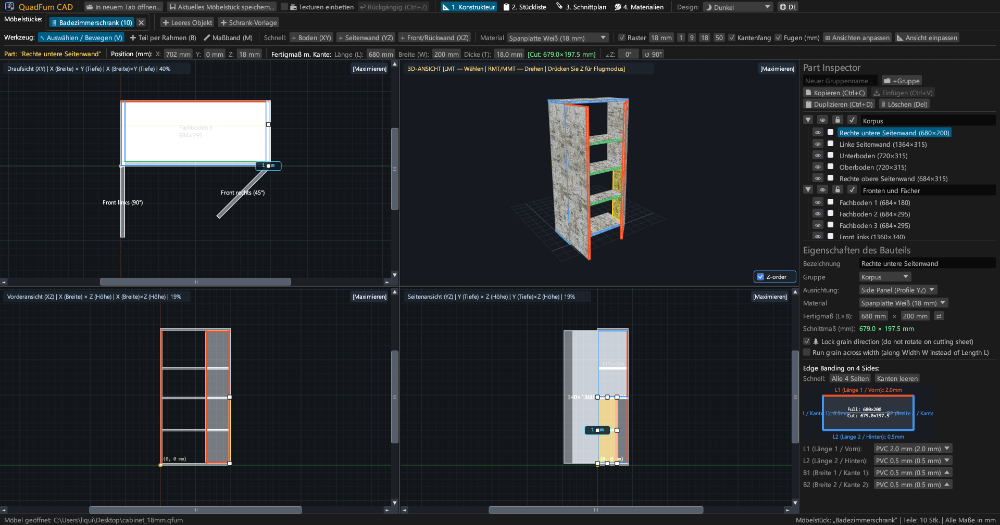
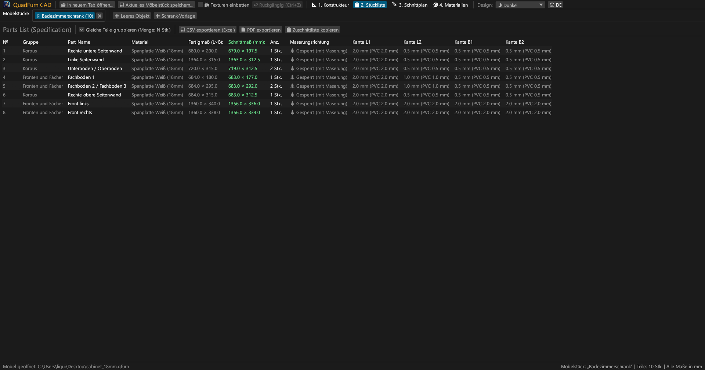
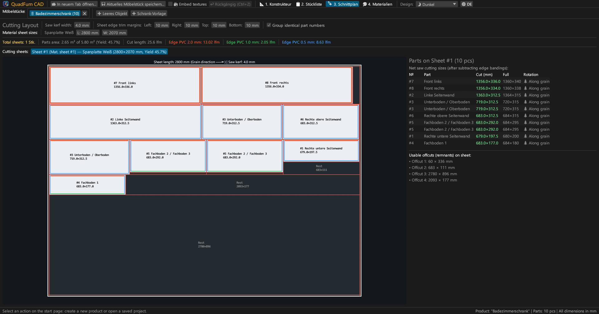
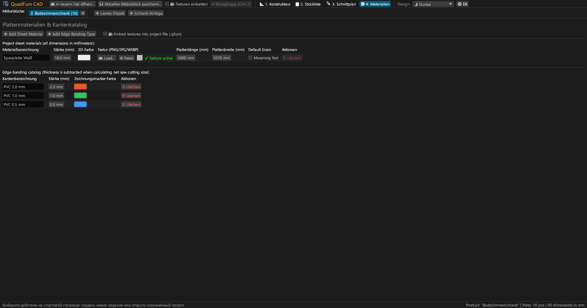
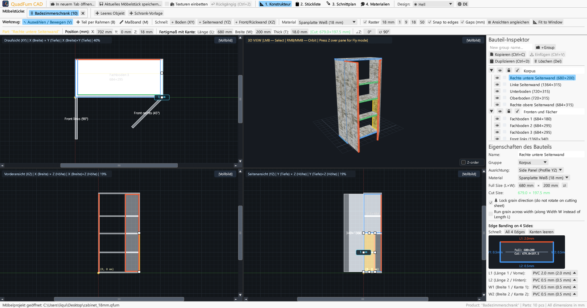
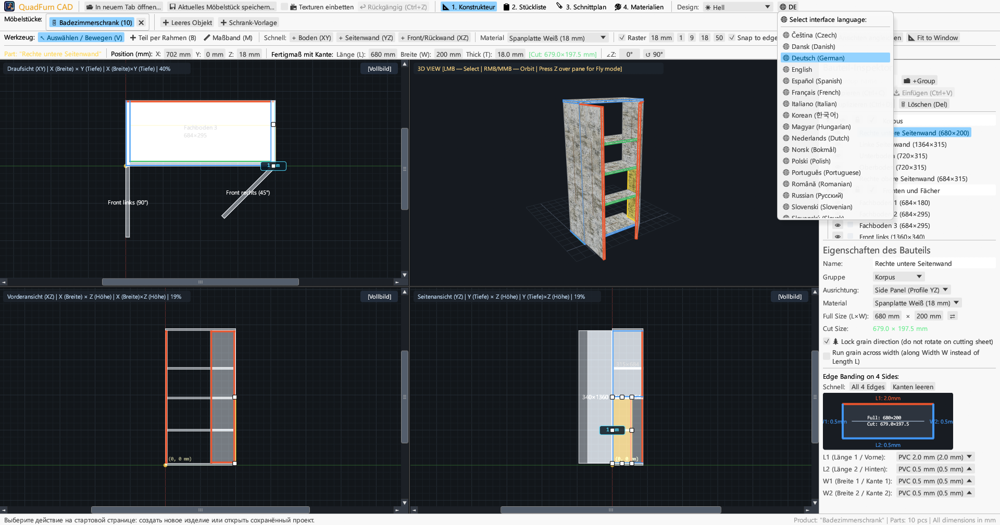

Schnelle, hardwarebeschleunigte CAD-Software für Tischler und Schreiner. 4-Projektionen-Raummodellierung, mathematische Maßeingabe, Kantenstärkenabzug und Plattenzuschnitt.

Verbindet synchrones Zeichnen in 4 Projektionen, präzise Koordinateneingabe und Guillotinen-Zuschnitt in einer durchgängigen Software.
Gleichzeitiges Arbeiten in Draufsicht (XY), Frontansicht (XZ), Seitenansicht (YZ) und 3D-Perspektive mit magnetischem Fangen und Maßausweisen.
Direkte Eingabe von Koordinaten (X, Y, Z), Abmessungen (L × B × T) und Drehwinkel (∠Z) mit integrierter Rechenformel (z. B. 600-4 oder (800-36)/2).
Zuweisung von PVC/ABS-Kanten (0,4–2,0 mm) an jede der 4 Kanten zur automatischen Berechnung exakter Netto-Sägezuschnittmaße für die Formatkreissäge.
Optimierer unter Berücksichtigung von Faserrichtung, Sägeschnittbreite (z. B. 4,0 mm), Besäumschnitt und Erfassung wiederverwendbarer Restplatten.
Gleichzeitiges Bearbeiten mehrerer Möbelstücke in Tabs. Kopieren und Einfügen von Teilen zwischen Projekten mit Material- und Kantenübertragung.
Druckfertiger A4-Querformat-Export: Stückliste, 4-Ansichten-Zeichnungen, Schnittpläne und Materialbilanz mit +15 % Verschnittreserve.





Eigenständige portable Programmdateien ohne externe Laufzeitabhängigkeiten.
Portable ausführbare Datei mit Icon, keine Installation erforderlich.
sudo apt install ./quadfurn_0.2.3_amd64.deb
Universal App-Bundle für Apple Silicon (M1–M4) und Intel x86_64.
| Taste / Kürzel | Aktion | Bereich |
|---|---|---|
| V | Auswahl- / Verschiebewerkzeug (8 Anfasser, Rahmenauswahl) | 2D-Ansichten |
| B | Bauteil per Rahmen erstellen (Rechteck aufziehen) | 2D-Ansichten |
| M | Maßband (Messung von ΔX, ΔY, L in Millimetern) | 2D-Ansichten |
| Z | Ego-Freiflugmodus (Noclip mit WASD + Mausblick) | 3D-Fenster |
| ← → ↑ ↓ | Ausgewählte Bauteile um Rasterschritt bewegen (Shift für doppelten Schritt) | 2D-Ansichten |
| Ctrl + C / V | Bauteile kopieren / einfügen (funktioniert zwischen Tabs) | Alle Tabs |
| Ctrl + D | Ausgewählte Bauteile mit Versatz duplizieren | Aktives Projekt |
| Ctrl + S | Projekt in .qfurn / .json Datei speichern | Aktives Projekt |
| Ctrl + Z | Letzte Aktion rückgängig machen (bis zu 40 Schritte) | Aktives Projekt |
| Delete / Backspace | Ausgewählte Bauteile löschen | Aktives Projekt |